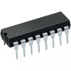
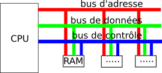
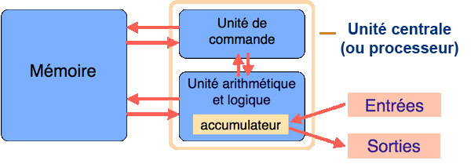

PDF : pour impression, diapos
Un ordinateur utilise uniquement des “1” et des “0”
Le transistor
Le transistor est un composant électronique qui sert d’interrupteur logique.
On le contrôle pour qu’il arrête le courant ou laisse passer le courant.

Le circuit intégré
Il est composé de milliers de transistors
Un circuit intégré 
Principe du transistor
Les transistors se comportent comme des interrupteurs : soit le transistor laisse passer le courant électrique (interrupteur fermé), soit il ne le laisse pas passer (interrupteur ouvert).
Le courant passe ou le courant ne passe pas.
Du courant au binaire
L’ordinateur fonctionne uniquement avec deux états :
On parle d’un état “haut” et d’un état “bas”.
- état “haut” symbolisé par le chiffre “1”
- état “bas” par le chiffre “0”.
On travaille donc uniquement avec 2 chiffres, d’où le binaire.
Opérations booléennes
Le transistor est l’élément de base des circuits logiques. Un circuit logique permet de réaliser une opération booléenne. Ces opérations booléennes sont directement liées à l’algèbre de Boole
Une opération booléenne
cf partie données : opération booléennes
Table de vérité porte “OU” :
| E1 | E2 | S |
|---|---|---|
| 0 | 0 | 0 |
| 0 | 1 | 1 |
| 1 | 0 | 1 |
| 1 | 1 | 1 |
La mémoire vive et le processeur
combinaisons de circuits logiques,
En combinant plusieurs fois le type de circuit décrit ci-dessus, on obtient des additionneurs capables d’additionner des nombres sur X bits.
-
à la base nous avons le transistor, une combinaison de transistor (sous forme de circuit intégré) permet d’obtenir des circuits logiques,
-
la combinaison de circuits logiques permet d’obtenir des circuits plus complexes (apr exemple l’additionneur), et ainsi de suite…
-
Au sommet de cet édifice (on pourrait parler de poupée russe), nous allons trouver la mémoire vive (RAM) et le microprocesseur (CPU).
La mémoire vive RAM (Random Access Memory)
Permet de stocker des données et des programmes.
La mémoire stocke les données (les bits), sous forme d’états électriques (ce sont des circuits logiques !)
Attention : la mémoire ne gère pas les bits 1 par 1, mais 8 par 8 (octets) !
La mémoire vive
Mémoire = série de cellules
Chaque cellule est capable de stocker 1 octet.
Chacune de ces cellules possède une adresse.
Deux opérations lecture / écriture.
- Lecture : lire l’octet situé à l’adresse mémoire XXXXX
- Écriture : écrire un octet donné à l’adresse mémoire YYYYY
La mémoire vive est volatile
Ancien modèle
1 bit d’une cellule est l’association d’un transistor et d’un condensateur.
Condensateur : composant électronique qui peut être soit chargé (on stocke alors un “1”), soit déchargé (on stocke alors un “0”).
Un condensateur doit être alimenté électriquement afin de conserver cette charge.
Toutes les données présentes en mémoire sont perdues en cas de coupure de courant.
La mémoire vive est volatile
Modèle récent
Circuit de type “bascule”.
circuit de type bascule, permet de stocker 1 bit : combinaison de porte logique.

Conserver des données
Il faut faire appel à d’autres types de mémoire : les mémoires de stockage : le disque dur
CPU (Central Processing Unit) : le microprocesseur
microprocesseur
Le microprocesseur est le “cœur” d’un ordinateur : les instructions sont exécutées au niveau du CPU.
processeurs : 3 parties
- les registres mémorisent de l’information (donnée ou instruction) au sein même du CPU.
- L’unité arithmétique et logique (UAL ou ALU en anglais) est chargée de l’exécution de tous les calculs
- L’unité de commande permet d’exécuter les instructions (les programmes)
Le bus
Le bus
Comment circulent les données ?
Les données doivent circuler entre les différentes parties d’un ordinateur
Le système permettant cette circulation est appelé bus.
3 grands types de bus :
- Le bus d’adresse
- Le bus de données
- Le bus de contrôle permet de spécifier le type d’action
Le bus
bus 
Le modèle de Von Neumann
Modèle de Von Neumann

- Processeur : composé de deux unités
- Unité de commande : contrôle la séquence d’instruction
- Unité arithmétique : exécution de ces instruction
- Mémoire : contient les données et les programmes
- Entrées : clavier, cartes perforées, etc.
- Sorties : affichages, imprimantes, écran